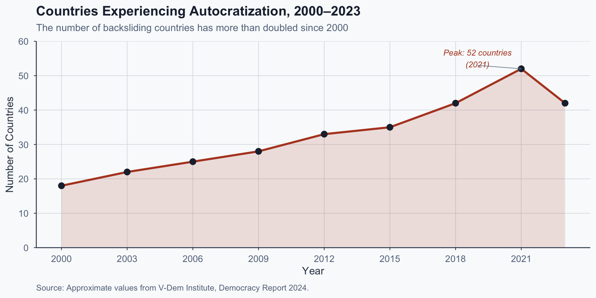
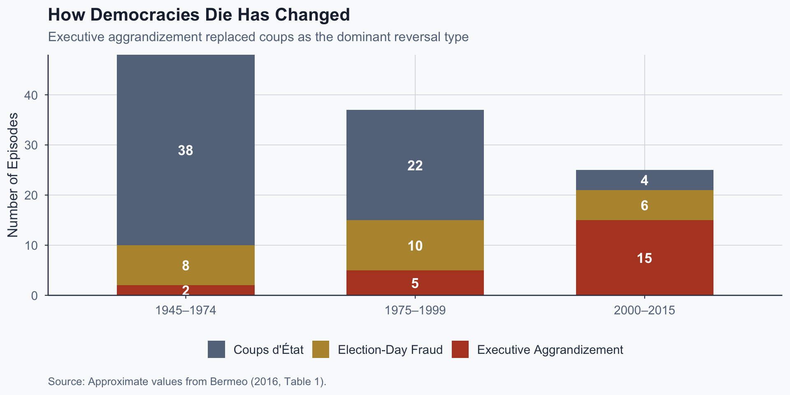
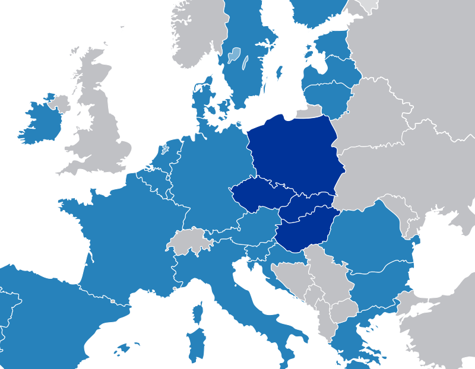
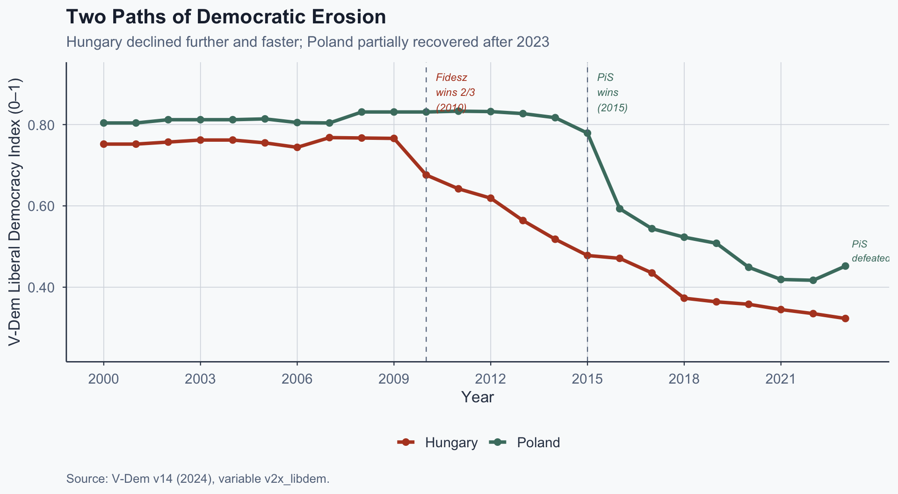
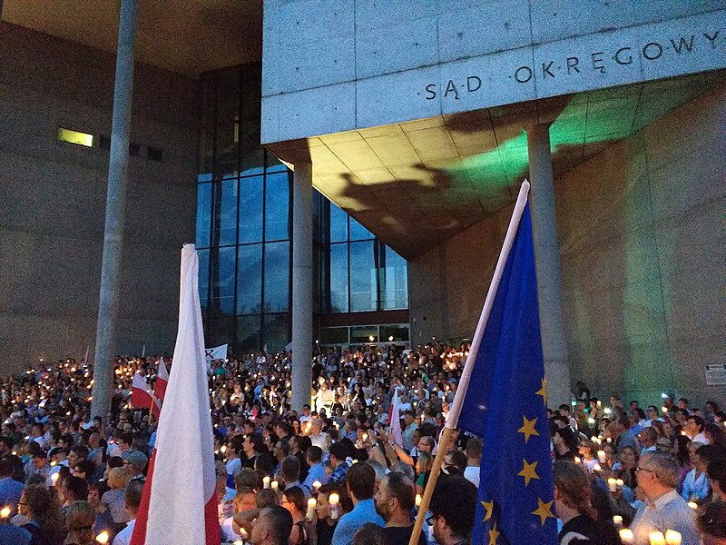
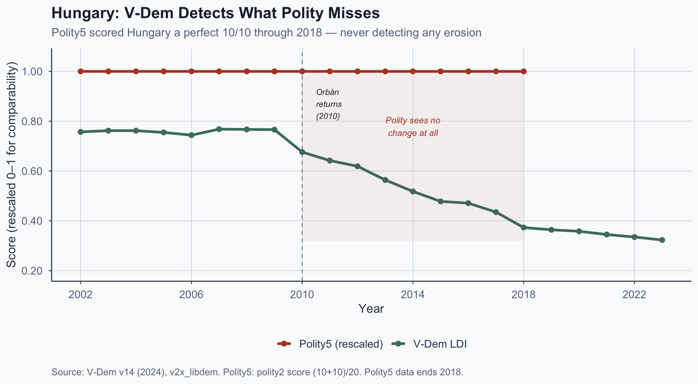
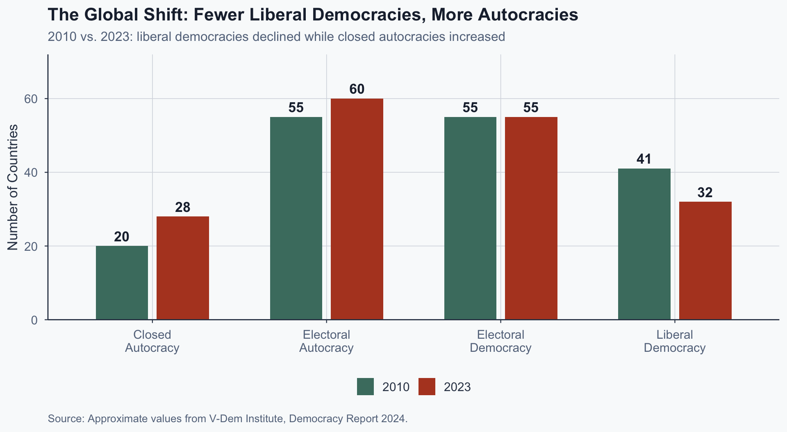

![]()
%%{init:{
"flowchart":{"useMaxWidth":true,"nodeSpacing":50,"rankSpacing":70},
"themeVariables":{"fontSize":"20px"},
"width":1150,
"height":650
}}%%
flowchart TB
A["Democratic<br/>Backsliding"] --> B["Coups<br/>d'État"]
A --> C["Executive<br/>Coups"]
A --> D["Election-Day<br/>Fraud"]
A --> E["Promissory<br/>Coups"]
A --> F["Executive<br/>Aggrandizement"]
style A fill:#1e293b,color:#fff,stroke:#334155
style B fill:#64748b,color:#fff,stroke:#334155
style C fill:#64748b,color:#fff,stroke:#334155
style D fill:#64748b,color:#fff,stroke:#334155
style E fill:#b7943a,color:#fff,stroke:#334155
style F fill:#b44527,color:#fff,stroke:#334155
Comparative Politics
Lecture 6: Democratic Backsliding
The Tension
A Question Before Definitions
“If voters knowingly elect leaders who dismantle democratic constraints, is backsliding a failure of democracy — or democracy working as designed?”
This is not a discussion prompt for the end. It is the normative problem that organizes this entire lecture.
Svolik (2019) shows experimentally that partisans trade democratic principles for policy wins. If true, the standard story — institutions fail to restrain bad leaders — is incomplete.
Maybe the institutions are doing exactly what voters want.
Global Democratic Erosion

Figure 1: Approximate values from V-Dem Democracy Report 2024.
What Is Democratic Backsliding?
Bermeo’s Definition
“Democratic backsliding is the state-led debilitation or elimination of any of the political institutions that sustain an existing democracy.” — Bermeo (2016, p. 5)
The key insight: modern backsliding is incremental. No single moment of death.
Each step is ambiguous enough to be defensible — harder to study, harder to measure, harder to mobilize against.
Classical Breakdown vs. Modern Backsliding
| Dimension | Classical Breakdown (Linz 1978) | Modern Backsliding (Bermeo 2016) |
|---|---|---|
| Mechanism | Military coup, revolution | Executive aggrandizement |
| Visibility | Clear rupture point | No single threshold crossed |
| Speed | Sudden | Gradual, incremental |
| Legal cover | Constitution suspended | Laws used against democracy |
| Public response | Immediate crisis | Slow, uncertain mobilization |
| Typical era | 1960s–1980s | 2000s–present |
Bermeo’s Taxonomy
The Rise of Executive Aggrandizement

Figure 2: Approximate values from Bermeo (2016, Table 1).
Why Incrementalism Matters
Step 1: Each action is individually defensible — a court reform, a media regulation, an electoral rule change.
Step 2: No single action crosses a bright line — no clear trigger for mobilization.
Step 3: By the time the cumulative effect is visible, the tools needed to reverse it have already been captured.
Voters or Institutions?
The Core Disagreement
The central debate in the backsliding literature:
Is backsliding primarily a story about what voters will tolerate, or about what institutions fail to prevent?
These are not parallel “demand-side” and “supply-side” stories. They generate different predictions about what saves democracy.
Voter-Tolerance Account: Svolik (2019)
Design: Conjoint experiments across multiple countries. Voters evaluate hypothetical candidates who vary on policy positions and democratic norm violations.
Finding: Partisans systematically discount democratic norm violations when the violator is on their side. Polarization degrades the electoral check.
Implication: Institutional erosion is a consequence of voter tolerance, not an independent cause. Electoral accountability fails first.
Svolik’s Key Finding
The experiment: Voters chose between hypothetical candidates varying on policy and democratic behavior (e.g., bypassing congress, restricting media). Randomized conjoint design isolates causal effects.
The result: All voters penalized norm violations — but the penalty was roughly halved for co-partisan candidates. Partisanship doesn’t blind voters; it makes them discount the cost.
The trap: The electoral check is weakest when it matters most — in polarized systems where partisans fear the other side winning more than they fear democratic erosion.
Institutional-Constraints Account: Levitsky & Ziblatt (2018)
Democracies survive when formal rules and informal norms bind executives regardless of popular support.
Mutual toleration: Parties accept each other as legitimate rivals, not existential enemies.
Institutional forbearance: Leaders refrain from using the full extent of their legal powers — even when they could.
When these guardrails erode, backsliding succeeds — even against majority preferences.
Two Causal Logics
%%{init:{
"flowchart":{"useMaxWidth":true,"nodeSpacing":50,"rankSpacing":70},
"themeVariables":{"fontSize":"18px"},
"width":1150,
"height":650
}}%%
flowchart LR
A["Polarization"] --> B["Voters Discount<br/>Norm Violations"]
B --> C["Electoral Check<br/>Fails"]
C --> G["Democratic<br/>Backsliding"]
D["Weak Institutional<br/>Design"] --> E["Courts / Media<br/>Easily Captured"]
E --> F["No Veto<br/>Points"]
F --> G
style A fill:#b44527,color:#fff,stroke:#334155
style B fill:#b44527,color:#fff,stroke:#334155
style C fill:#b44527,color:#fff,stroke:#334155
style D fill:#4a7c6f,color:#fff,stroke:#334155
style E fill:#4a7c6f,color:#fff,stroke:#334155
style F fill:#4a7c6f,color:#fff,stroke:#334155
style G fill:#1e293b,color:#fff,stroke:#334155
Different Predictions
| Question | Svolik (2019) | Levitsky & Ziblatt (2018) |
|---|---|---|
| Root cause | Polarized voters | Weak guardrails |
| What saves democracy? | Depolarized electorate | Stronger institutions |
| Rich democracies safe? | Not if polarized | Not if norms erode |
| Reform priority | Civil society, media literacy | Constitutional design |
| Explains variation by… | Partisan polarization levels | Institutional architecture |
Exercise 1: Turkey Under Erdoğan
Class Exercise (5 min)
Erdoğan won the 2017 constitutional referendum with 51.4% — converting Turkey to a presidential system.
- Counterfactual: If the referendum had failed, would Turkey’s institutions have constrained Erdoğan — or would he have found another path?
- What does your answer tell you about whether voter tolerance or institutional weakness was the binding constraint?
- What one piece of evidence would distinguish the two accounts?
Source: Wikimedia Commons, CC BY-SA 4.0.
Hungary vs. Poland
A Most-Similar Comparison
| Dimension | Hungary | Poland |
|---|---|---|
| EU accession | 2004 | 2004 |
| Pre-1989 regime | Communist | Communist |
| Governing party | Fidesz (right-populist) | PiS (right-populist) |
| Came to power | 2010 | 2015 |
| Playbook | Court-packing, media capture | Court-packing, media capture |
| Outcome | Deep erosion | Partial recovery |

Source: Wikimedia Commons, CC BY-SA 3.0.
Both pursued similar playbooks — yet Orbán went further, faster, and more durably. Why?
V-Dem Liberal Democracy Index: Hungary & Poland

Figure 3: Data from V-Dem v14 (2024), variable v2x_libdem.
Electoral Arithmetic
Hungary: Fidesz won a two-thirds supermajority in 2010 — enabling constitutional revision without negotiation. A new Fundamental Law was adopted in 2011.
Poland: PiS never had a two-thirds majority. Constitutional amendments required opposition support they could not secure.
This single difference — the constitutional amendment threshold — shaped everything that followed. Electoral margins determine institutional access.
Hungary’s Capture Sequence
%%{init:{
"flowchart":{"useMaxWidth":true,"nodeSpacing":50,"rankSpacing":70},
"themeVariables":{"fontSize":"18px"},
"width":1150,
"height":650
}}%%
flowchart LR
A["2/3 Majority<br/>(2010)"] --> B["New<br/>Constitution<br/>(2011)"]
B --> C["Court<br/>Packing<br/>(2012–13)"]
C --> D["Media<br/>Capture<br/>(2014–18)"]
D --> E["Electoral<br/>System<br/>Redesign"]
E --> F["Consolidated<br/>Control"]
style A fill:#4a7c6f,color:#fff,stroke:#334155
style B fill:#4a7c6f,color:#fff,stroke:#334155
style C fill:#b7943a,color:#fff,stroke:#334155
style D fill:#b7943a,color:#fff,stroke:#334155
style E fill:#b44527,color:#fff,stroke:#334155
style F fill:#b44527,color:#fff,stroke:#334155
Scheppele’s Autocratic Legalism
Scheppele (2022): Orbán used the law itself as a weapon of autocratic consolidation.
- Every step was formally legal under the new constitution
- International observers lacked clear grounds for intervention
- The EU’s tools were designed for external threats to democracy, not internal ones
“Autocratic legalism uses the forms of law to destroy the substance of democracy.” — Scheppele (2022)

Source: Wikimedia Commons, CC-BY-SA 4.0.
Poland: Where the Sequence Broke
PiS tried Orbán’s sequence — it stalled at step one.
- No supermajority → could not rewrite the constitution
- Tried capturing judiciary by statute instead
- Old Constitutional Tribunal became a focal point for opposition
Cascade that didn’t happen: Courts resisted → media covered → civil society mobilized (2017–18) → playing field never fully captured

Source: Marek Ślusarczyk, Wikimedia Commons, CC BY 3.0.
Scheppele in Reverse
Orbán (Hungary):
- Supermajority → constitutional access
- Every downstream capture formally legal under new Fundamental Law
PiS (Poland):
- Same legalist strategy, without the gateway
- Each step legally contestable; each institution could still check the next
Lesson: Autocratic legalism is an institutional opportunity structure, not a leadership style — without constitutional access, the playbook fails
EU Leverage: Two Outcomes
Both faced Article 7 proceedings and frozen funds.
- Hungary: institutions already captured → frozen funds hurt budget, not power structure
- Poland: surviving courts and media let opposition use EU pressure as a resource
Source: Wikimedia Commons, CC BY-SA 4.0.
When Does Conditionality Work?
Poland 2023: Tusk’s coalition won → €137 billion in frozen EU funds became a reform mandate
Why it worked: domestic opposition already had capacity:
- Independent courts to anchor reform
- Pluralistic media to sustain visibility
- Civil society to mobilize voters
Lesson: External leverage is a scope condition — amplifies domestic opposition where it exists, cannot substitute for it
Connecting Cases to Theory
Svolik:
- Voter tolerance present in both cases — yet outcomes diverged
- Cannot explain the variation alone
Levitsky & Ziblatt:
- Institutional design does explain it — Hungary’s constitution let a supermajority rewrite the rules; Poland’s did not
- But that supermajority was electorally granted
Scheppele:
- Autocratic legalism requires a constitutional gateway
- Orbán had it; Kaczyński did not
Poland’s Partial Recovery
In October 2023, PiS lost its parliamentary majority. A pro-EU coalition under Donald Tusk took office.
Recovery was possible because the capture sequence had stalled:
- Surviving courts → legal framework for reversal
- Surviving media → voters had the information to act
- Unlocked EU funds → resources and mandate for reform
Erosion Depth and Reversibility
Hungary (completed sequence):
- Courts packed, media captured, electoral rules rewritten
- No institutional foothold for opposition remains
- Tools for alternation dismantled — even if voters turn
Poland (interrupted sequence):
- Institutions that blocked PiS became the foundation for recovery
- Everything to build on remained intact
Lesson: Depth of erosion determines reversibility — what survives defines what can be rebuilt
Exercise 2: Advising Brussels
Class Exercise (5 min)
Prompt: You are an advisor to the European Commission. A new EU member state’s government is:
- Packing the constitutional court
- Passing a media law that concentrates broadcast licenses
- Redrawing electoral districts
- What tools does Brussels have?
- Which would you recommend — and in what sequence?
- Under what conditions would your strategy actually work?
Measuring Backsliding
Two Approaches
| Dimension | V-Dem | Polity |
|---|---|---|
| Scale | Continuous (0–1) | Categorical (−10 to +10) |
| Sensitivity | Detects incremental change | Misses early stages |
| Data structure | Multiple component indices | Single composite score |
| Coverage | 1789–present | 1800–present |
| Update frequency | Annual | Irregular |
| Methodological basis | Expert surveys (3,500+ experts) | Coding rules |
V-Dem Shows What Polity Misses

Figure 4: V-Dem v14 (2024) and actual Polity5 scores (rescaled 0–1).
Measurement as Politics
Scores shape policy:
- V-Dem ratings → EU Article 7 proceedings
- Democracy indices → USAID conditionality decisions
- Rankings → media narratives about democratic health
Measuring shapes the phenomenon:
- Countries adjust behavior when scored — sometimes substantively, sometimes cosmetically
- The choice of tool determines which cases look alarming
Measurement as Politics
Svolik’s methodological move:
- Measures voter tolerance at the individual level, not backsliding at the country level
- Avoids aggregation bias — but cannot capture institutional capacity
The Global Picture

Figure 5: Approximate values from V-Dem Democracy Report 2024.
What Saves Democracy?
Return to the Opening Question
“If voters knowingly elect leaders who dismantle democratic constraints, is backsliding a failure of democracy — or democracy working as designed?”
The question is badly posed. Backsliding is a sequential interaction, not one cause:
- Voter tolerance → electoral margin → institutional access → capture
What the cases show:
- Hungary: voters gave Orbán the constitutional gateway (⅔ majority)
- Poland: voters gave PiS power but not the key (simple majority)
- The binding constraint shifts depending on the threshold
Return to the Opening Question
“If voters knowingly elect leaders who dismantle democratic constraints, is backsliding a failure of democracy — or democracy working as designed?”
Implication: the fix is institutional design that never allows a single election to grant unlimited access
Key Takeaways
- Democratic backsliding is incremental erosion from within — not the classical coup (Bermeo)
- Executive aggrandizement is now the modal form of democratic reversal
- The core debate is voters vs. institutions — and they interact
- Hungary vs. Poland shows how electoral margins and institutional design jointly determine erosion depth
- Measurement is politics — how we operationalize backsliding shapes which cases trigger alarm and which policies follow
What We Still Don’t Know
- Can depolarization be engineered, or is it a structural outcome beyond policy reach?
- Why do some backsliding episodes reverse (Poland 2023) while others consolidate (Hungary)?
- Does the international order still have tools that bind, or has authoritarian learning outpaced democratic defense?
- Is executive aggrandizement a stable regime type — or a transitional phase toward full autocracy?
References
References
Bermeo, N. (2016). On democratic backsliding. Journal of Democracy, 27(1), 5–19.
Levitsky, S., & Ziblatt, D. (2018). How democracies die. Crown.
Linz, J. J. (1978). The breakdown of democratic regimes: Crisis, breakdown, and reequilibration. Johns Hopkins University Press.
Lührmann, A., & Lindberg, S. I. (2019). A third wave of autocratization is here: What is new about it? Democratization, 26(7), 1095–1113.
Scheppele, K. L. (2022). Autocratic legalism. Annual Review of Law and Social Science, 18, 25–49.
Svolik, M. W. (2019). Polarization versus democracy. Journal of Democracy, 30(3), 20–32.
V-Dem Institute. (2024). Democracy report 2024: Democracy winning and losing at the ballot. University of Gothenburg.
Waldner, D., & Lust, E. (2018). Unwelcome change: Coming to terms with democratic backsliding. Annual Review of Political Science, 21, 93–113.
Popescu (JCU) Comparative Politics Lecture 6: Democratic Backsliding